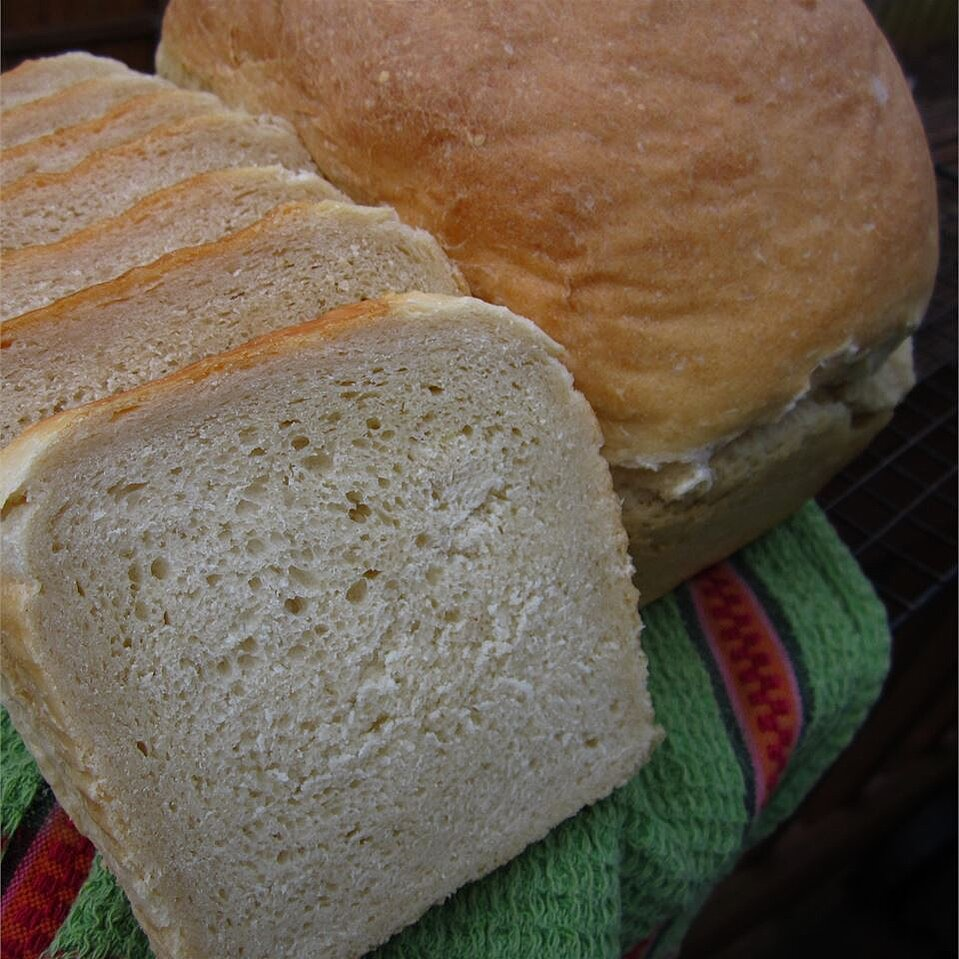

Versatile Bread

Description
It is a dense bread that is wonderful as toast, French toast, or for sandwiches.
Prep: 30 mins
Cook: 1 hr
Additional: 1 hr 20 mins
Total: 2 hrs 50 mins
Servings: 18
Yield: 2 - 9x5 inch loaves
Ingredients
- 2 cups milk
- ½ cup unsalted butter
- 1 teaspoon salt
- 2 tablespoons white sugar
- 2 (.25 ounce) packages active dry yeast
- ⅔ cup warm water (110 degrees F/45 degrees C)
- 1 egg, beaten
- 7 cups all-purpose flour
Steps
- Heat the milk in a small saucepan until it bubbles, then remove from heat. Add the butter, salt and sugar and stir until melted; let cool until lukewarm. In a small bowl, dissolve yeast in warm water. Let stand until creamy, about 10 minutes.
- In a large bowl, combine milk mixture with the yeast mixture. Mix in the egg and 3 cups of flour. Stir in the remaining flour, 1/2 cup at a time, beating well after each addition. When the dough has pulled together, turn it out onto a lightly floured surface and knead until smooth and elastic, about 8 minutes. Lightly oil a large bowl, place the dough in the bowl and turn to coat with oil. Cover with a damp cloth and let rise in a warm place until doubled in volume, about 1 hour.
- Deflate the dough and turn it out onto a lightly floured surface. Divide the dough into two equal pieces and form into loaves. Place the loaves into two lightly greased 9x5 inch loaf pans. Cover the loaves with a damp cloth and let rise until dough reaches the pan tops, about 30 minutes. Meanwhile, preheat oven to 350 degrees F (175 degrees C).
- Bake in preheated oven for 45 to 50 minutes, or until bottom of the loaves sound hollow when tapped. Place on wire racks to cool.